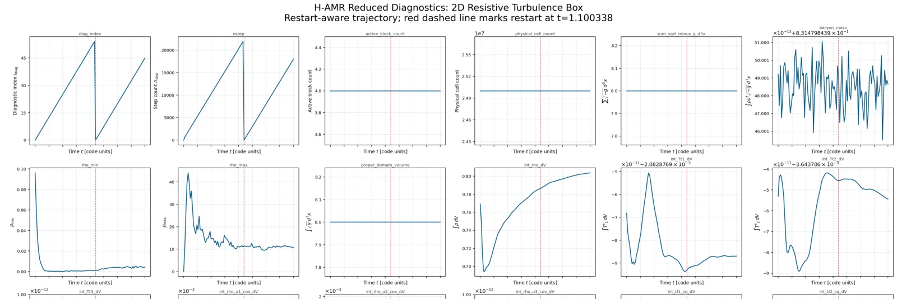
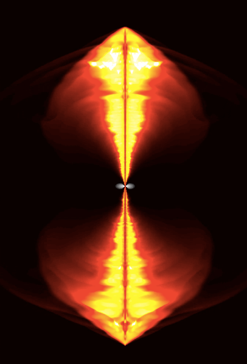
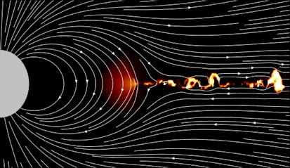

Ideal and resistive GRMHD for accretion flows, jets, current sheets, and magnetospheres.
Numerical simulations
I build the experiments behind the astrophysics.
I develop and test numerical methods for relativistic plasmas around black holes and neutron stars. My work spans GPU-accelerated GRMHD, adaptive meshes, radiation transport, charged particles, and the diagnostics needed to decide whether a simulation is physically trustworthy.
$ hamr validate --suite selected PASS analytic Bondi inflow PASS resistive AMR shock capture PASS multigroup S_N transport PASS restart-aware conservation GRMHD + radiation + particles GPU / MPI / OpenMP selected checks complete
GPUaccelerated evolution
AMRadaptive resolution
GRcurved spacetime
The engine
H-AMR
H-AMR is the main simulation code behind much of my work. I co-developed it to make high-resolution relativistic plasma calculations practical on modern GPU systems, while retaining the mesh control and diagnostics needed for difficult multi-scale problems.
Research code · private repository
From the event horizon to astrophysical outflows
The code evolves relativistic magnetized fluids in fixed curved spacetimes. Three-dimensional adaptive mesh refinement, polar de-refinement, and local adaptive time stepping concentrate work where the physics demands it. My current development also includes resistive methods, multigroup discrete-ordinates radiation transport, two-temperature plasma physics, charged particles, and restart-safe reduced diagnostics.
Block-structured AMR, local time stepping, and spherical-grid de-refinement across extreme dynamic ranges.
Multigroup discrete-ordinates transport with implicit matter coupling and two-temperature thermodynamics.
Regression suites, conservation budgets, restart checks, and decomposition comparisons are part of development.
The test lab
Tests are part of the science.
A simulation is useful only when its numerical behavior is understood. These are selected completed checks from the larger H-AMR validation inventory. Each one targets a different failure mode: analytic accuracy, strong discontinuities, mesh transfers, radiation coupling, or reproducible restarts.
Runtime validated
Analytic Bondi accretion
A steady spherical inflow provides a curved-spacetime regression test for the fluid solver. Radial profiles and conserved fluxes are checked against the analytic solution.
GR hydroanalytic referencesteady state
Runtime validated
Resistive shocks across AMR
Strong relativistic discontinuities exercise the finite-volume reconstruction, resistive update, limiter, and coarse–fine mesh interfaces without hiding failed cells.
resistive RMHDshock limiterAMR interfaces
Runtime validated
Multigroup SN radiation
Angular and frequency-resolved radiation is transported across blocks, MPI ranks, mapped coordinates, and adaptive meshes, with positivity and conservation checks at each stage.
multiple groupsMPIGR transport
Runtime validated
Restart-aware turbulence
A 25-million-cell resistive turbulence run completed on one H100 after a checkpoint restart. Conserved budgets remained finite and invalid-state counters stayed at zero.
25M cells1× H100restart verified

From code to cosmos
Simulation gallery
The numerical machinery becomes astrophysics in global simulations of accretion, relativistic jets, black-hole variability, and magnetized neutron-star environments.
Misaligned accretion
A tilted magnetized flow around a rapidly spinning black hole.
GRMHDFlares near a black hole
Magnetic activity produces rapid variability close to the horizon.
H-AMRJets from accretion disks
Relativistic outflows connect the horizon to much larger scales.
GRMHD
Jet propagation
Magnetic structure, entrainment, and instabilities shape a jet far from its source.
H-AMR
Pulsar current sheets
Three-dimensional structure develops in a rotating magnetosphere.
Resistive MHD
Accreting neutron stars
A stellar magnetic field redirects the disk into columns and outflows.
H-AMROpen source
Related public tools
Most active H-AMR development is private. These public repositories provide useful entry points into the broader simulation and radiative-transfer ecosystem.
github.com/atchekho/harmpiHARMPI
A public MPI-parallel GRMHD code and a compact starting point for relativistic accretion calculations.
Open repository ↗github.com/black-hole-group/grmontyGRMONTY
Monte Carlo radiative transfer for turning relativistic plasma simulations into spectra and observables.
Open repository ↗github.com/entity-toolkit/entityENTITY
An open numerical toolkit used alongside simulation and transport workflows.
Open repository ↗